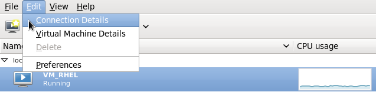
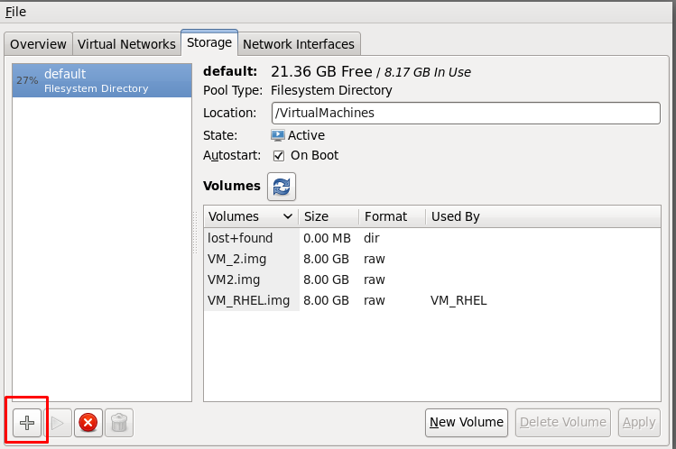

Mapping NFS share to clients
On Red Hat Enterprise Linux
Note:The mapping procedures are similar for other flavors of Linux.
- Ensure that you have enabled the NFS. For details, see "Configuring NFS protocol options".
- On your RedHat Enterprise Linux server, at command prompt, specify the following command to verify the NFS export:
showmount -e <tenant IP address> - Create a directory to mount the NFS using the following command:
mkdir <directoryname> - Mount the NFS on this directory using the following command:
mount -o mountproto=tcp <tenant IP address:>/<exported path><directoryname> - Enter the following command:
mount - If successfully mounted, the following is displayed in the mount list:
<tenant IP address>:<exportpath> on <directoryname> type nfs (rw,addr=<tenant IP address>)
If correctly exported, the path to the filesystem along with the authorized network is displayed.
Sample CLI snapshot
[root@localhost ~]# showmount -e 20.10.26.199
Export list for 20.10.26.199:
/acctsample (everyone)
#Here everyone implies that the exported path is shared to all (as configured in NFS page).
If you specify a specific client IP, that IP is displayed.
[root@qaprod ~]# mkdir /mnt/nfslocal
[root@qaprod ~]# mount -t nfs -o vers=3,proto=tcp,nolock,sync 20.10.26.199:/acctsample /mnt/nfslocal/
[root@qaprod ~]# mount
/dev/mapper/VolGroup-lv_root on / type ext4 (rw)
proc on /proc type proc (rw)
sysfs on /sys type sysfs (rw)
devpts on /dev/pts type devpts (rw,gid=5,mode=620)
tmpfs on /dev/shm type tmpfs (rw,rootcontext="system_u:object_r:tmpfs_t:s0")
/dev/sda1 on /boot type ext4 (rw)
none on /proc/sys/fs/binfmt_misc type binfmt_misc (rw)
sunrpc on /var/lib/nfs/rpc_pipefs type rpc_pipefs (rw)
gvfs-fuse-daemon on /root/.gvfs type fuse.gvfs-fuse-daemon (rw,nosuid,nodev)
20.10.26.199:/acctsample on /mnt/nfslocal type nfs
(rw,sync,vers=3,mountproto=tcp,addr=20.10.26.199,mountaddr=20.10.26.199)
On Kernel-based Virtual Machine
Note:The following section provides procedures performed on RHEL 6.3. The procedures might be similar on other flavors of Linux.
- On your Linux desktop, select Applications > System Tools > Virtual Machine Manager.
- Select a host machine.
- Click Edit > Connection Details.
- Click Storage tab.
- Click the Add Storage Pool + icon at the bottom left side of the dialog box. The Add a New Storage Pool wizard appears.


- Specify a name for the Pool, select Network Exported Directory as the type, and then click Forward.
- In the following page, specify the required details.
- Click Finish.
| Field | Description |
| Target Path | Path of the target directory (to use for the Storage Pool). |
| Format | Set the Format option to NFS. |
| Host Name | Host name or IP address of the NFS Server. |
| Source Path | Enter the NFS path (path on the Host that is being shared). |